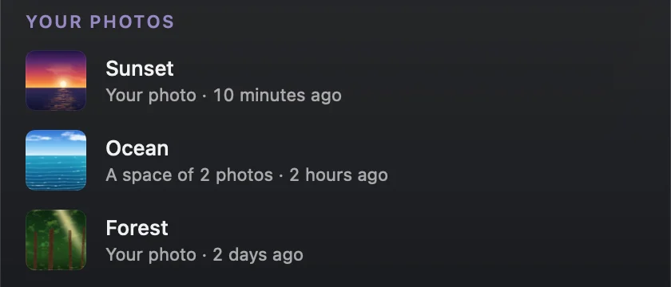
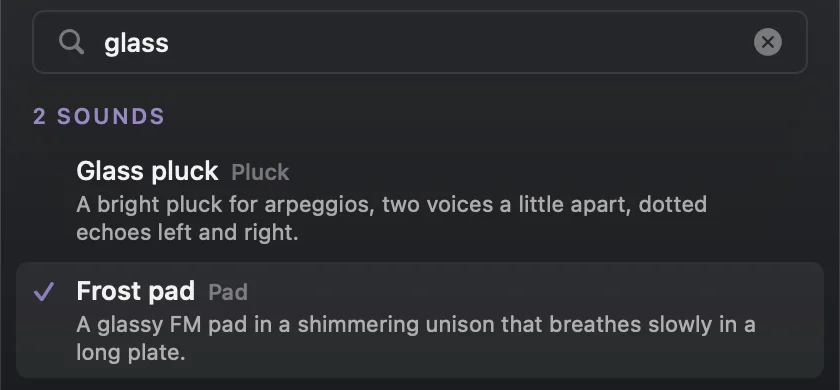
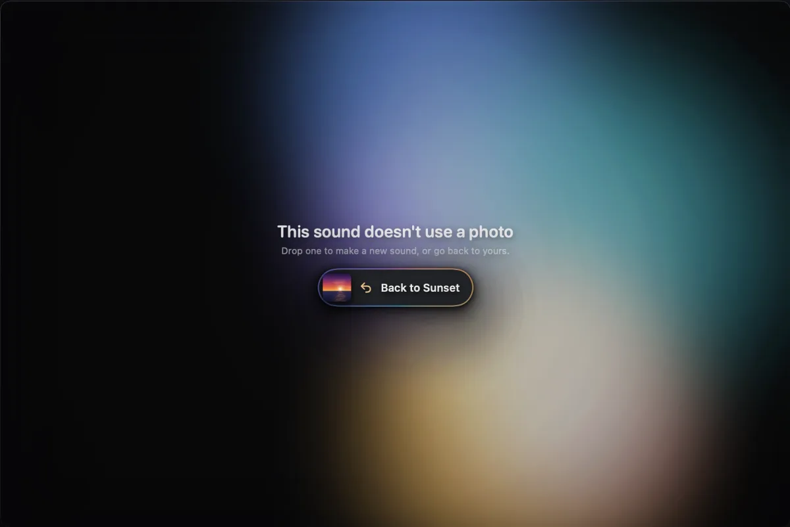
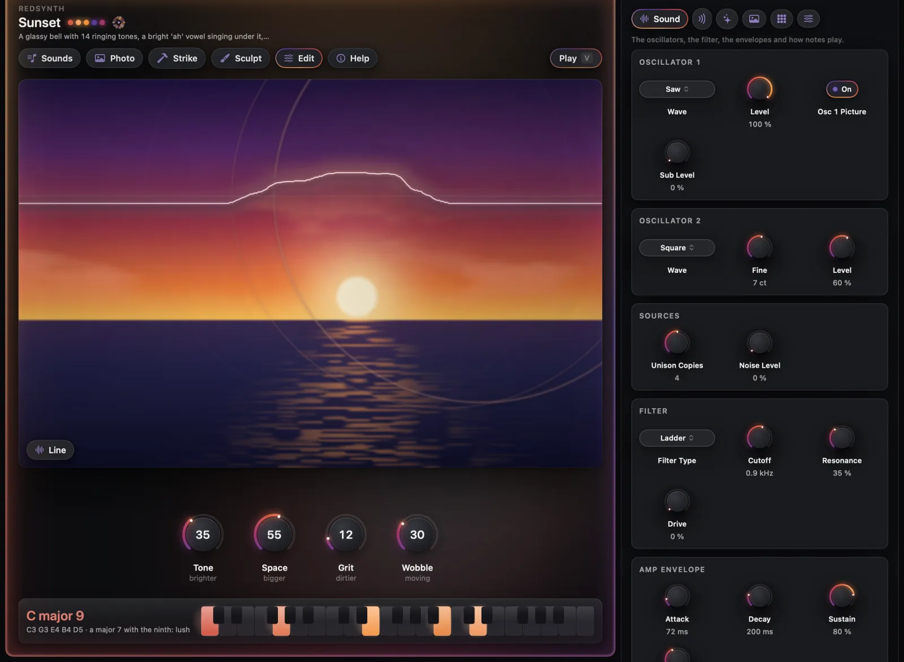
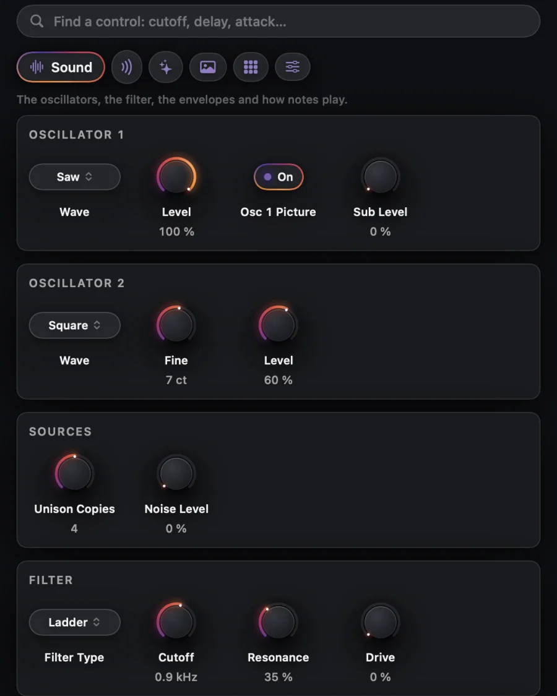

Sounds and the synth
Under the photo is a complete synthesizer. You can ignore it and use four knobs, or open Edit and reach every part of it. This chapter covers choosing a sound, the knobs, Edit, and ends with every control in one line each.
Choosing a sound
Tap Sounds. The list opens on two parts: Your photos at the top, then the Library, the built-in sounds in eight groups. Each group shows how many sounds it holds and a few of their names.
- Tap a group to open it. Every sound has a line under its name saying what it is. The one you're on is ticked. All sounds takes you back.
- Search: type in the field at the top. It finds any sound by its name, its words or its group, your photos included.
- Mac The list opens beside the button. iPad It slides up from the bottom.


Drawn by the app's own views from a small sample list, not the full library.
Your photo sounds
Every photo you add becomes a sound with the photo's name, and the app keeps it on your device. They're under Your photos, the one you played last at the top, each with a small copy of its photo and when you made it. A space says how many photos it has.
- Choosing a built-in sound never loses a photo sound. When you leave one, it's kept as you left it: its knobs, its line, its sculpt.
- Tap it in the list to go back to it. The list shows the newest four; All your photos opens the rest.
- The app keeps your newest 24. When a 25th arrives, the oldest goes.
- Built-in sounds aren't kept this way. Only photo sounds are.

On a built-in sound, the photo area says This sound doesn't use a photo. Drop a photo there to make a new sound, or tap Back to and the name of your last photo sound.
The 144 sounds
| Group | What's in it | A few to try |
|---|---|---|
| Bass | Low, one-note-at-a-time and chordal basses | Velvet bass, Thumper, Tar pit |
| Lead | Melody sounds that cut through | Glass flute, Siren lead, Soft trumpet |
| Pad | Slow, wide chords | Glass ocean, Choir pad, Glacier |
| Keys | Organs, mallets and keyboards | Music box, Marimba, Felt keys |
| Pluck | Short, bright notes | Harp, Koto, Water pluck |
| Texture | Beds and drones to play under things | Rain on glass, Cave drone, Ghost choir |
| Wild | Effects and noises | Thunder, Modem, Glitch storm |
| Photo | Eight sounds that already carry a picture | Sunset photo, Neon photo, Word photo |
The Photo group is the quickest way to hear the photo idea before adding your own: pick one and drag the scan line.
The four macros
A macro is one knob that turns several things inside the synth together. There are four, and they're on every screen.
| Knob | Turn it up for | What moves inside |
|---|---|---|
| Tone | Brighter | Opens the filter and adds edge. Down is darker and softer. |
| Space | Bigger | Brings in echoes and reverb: wider and further away. |
| Grit | Dirtier | Adds drive, distortion and crunch. |
| Wobble | Moving | Makes the sound shimmer, sway and wobble. |
At zero a macro does nothing at all: the sound is exactly as it was designed. Drag a knob to turn it.
Help on a control
- Mac Rest the pointer on a knob for half a second.
- iPad Hold a finger still on it for a moment.
- Or tap Help (⌘/) and every control wears its line until you tap Help again.
Edit: every control
The macros are the quick way. Edit is the whole synthesizer: every control of the sound, the same ones the reference below lists.

- Mac Click Edit in the header, choose Sound › Edit Sound, or press ⌘E. It opens in its own window, so you can put it beside the instrument and play while you turn.
- iPad Tap Edit in the header (or ⌘E with a keyboard). A panel slides in beside the instrument. Tap Edit again, or the panel's close button, to put it away.
The pages
| Page | What's on it |
|---|---|
| Sound | The oscillators, the filter, the envelopes and how notes play. |
| Motion | The two LFOs, the macros and what your hands do. |
| Effects | The effects in the order the sound goes through them, and the sampler. Each effect's on switch is in its card's title. |
| Photo | How the photo is played: the line, the strike, the space. |
| Drums | The drum kit. It belongs to the kit, not to the sound. |
| Setup | Your controller and the clock. No sound saves these. |

Using it
- Each control is a knob, a switch or a menu, with its value under it in plain units.
- Drag a knob up or down. Double-tap it (double-click on a Mac) to put it back to its default.
- Find a control: type in the search field (cutoff, delay, attack…). It looks through every page, by name, card and help line.
- Help writes every control's one-line explanation under it. Mac Rest the pointer on a control to see just its line.
- What you see is live. Choose another sound, turn a macro, or let a music app's automation move something, and Edit shows the change.
Pictures drawn by the app's own views with a sample sound. A real sound has more controls on each card.
How the sound is made
One idea at a time, in the order the sound travels:
- Oscillators make the raw tone. Two of them and a sub an octave below. One of them can be your photo.
- Extras roughen it, if you ask: noise, copies of the note stacked up (unison), and three ways of bending the wave (FM, ring, fold).
- The filter shapes brightness. There are two kinds: a clean one and a ladder that growls.
- Envelopes shape each note in time: how fast it starts, how it settles, how long it rings.
- LFOs move things slowly by themselves: vibrato, wah, tremolo.
- Effects come last, always in the same order: crush, distortion, chorus, phaser, delay, reverb.
- The Touch FX pad's effect sits after all of that, then a soft limiter keeps the output safe.
Sixteen notes can sound at once. Play a seventeenth and the oldest fades out to make room.
Every control, in one line
These are the names Edit and your music app show.
Oscillators
| Osc 1 Wave | The first oscillator's shape. Saw is full, square hollow, triangle soft, sine pure. |
| Osc 1 Level | How much of Osc 1 is in the mix. |
| Osc 1 Picture | On: Osc 1 plays the photo instead of a wave. Each row is a different tone. |
| Sub Wave, Sub Level | A deep octave under the note. Square has edge; sine is pure weight. |
| Osc 2 Wave, Level | The second oscillator. Mix it with Osc 1 for a thicker tone. |
| Osc 2 Coarse | Its pitch in semitones. −12 is an octave down, +7 a fifth up. |
| Osc 2 Fine | Its pitch in cents. A few cents off Osc 1 gives a slow, rich shimmer. |
Extra sources
| Noise Level, Type | Adds hiss. A little is air and breath; a lot is wind. White is bright; pink is darker, like rain. |
| Unison Copies | How many copies of the note play at once, up to seven. More is thicker and wider. |
| Unison Detune | How far apart the copies are tuned. More is lusher; too much goes sour. |
| Unison Spread | How far the copies spread left and right. |
| FM Amount | Osc 2 shakes Osc 1's pitch very fast. A little is bell-like; a lot is harsh and clangy. |
| Ring Mod Level | Osc 1 times Osc 2: metallic, bell-like tones. |
| Fold Amount | Folds the wave over on itself. From a glow to a snarl. |
Filter
| Filter Type | SVF is clean and precise. Ladder is warmer and growls when pushed. |
| Cutoff | How bright the sound is. Lower is darker and muffled; higher is brighter and buzzier. |
| Resonance | A peak at the cutoff. A little adds focus; a lot whistles and squelches. |
| Drive | Pushes the sound harder into the filter. Warmth, then grit and growl. |
| Env Amount | How far each note opens the filter. More: each note starts bright, then dims. |
| Key Track | Lets high notes be brighter than low ones, like a real instrument. |
Envelopes
Two envelopes with the same four stages. The amp envelope shapes loudness. The filter envelope shapes brightness.
| Attack | How fast a note starts. Short is a pluck or a hit; long is a swell. |
| Decay | How long it takes to fall to its held level. Short is punchy. |
| Sustain | The level while you hold the key. At 0 the note dies away even if you hold it. |
| Release | How long the note rings after you let go. |
Voice and touch
| Voice Mode | Poly plays chords. Mono plays one note at a time. Legato is one note, slurred when you overlap. |
| Glide, Glide Mode | Slides from the last note to the new one: always, or only when notes overlap. |
| Velocity to Cutoff | How much harder playing brightens the sound. |
| Velocity to Level | How much harder playing makes it louder. |
| Slide to Cutoff | How much sliding a finger up brightens its note. |
| Press to Cutoff, Press to Level | How much pressing harder brightens the note, and swells it. |
| Mod Wheel to Cutoff | How far a keyboard's mod wheel opens the filter. |
| Bend Range | How far a pitch wheel bends, in semitones. |
| MPE Zone, Note Bend | For controllers where each finger has its own bend, slide and press. |
LFOs
An LFO is a slow wave that moves something for you. There are two, and each can move three things at once.
| Shape | Smooth (sine, triangle), sharp (saw, square) or random. |
| Sync, Rate, Note | Sync on: it locks to the beat as a note length. Off: a speed you set. |
| Trigger | Free: one wave for every note. Key: each note starts its own. |
| Fade In | The movement starts gently and builds. |
| Route 1–3 | What it moves: pitch (vibrato), cutoff (wah), level (tremolo), pan, Osc 2's tuning, FM, the delay's feedback. |
| Route Amount | How far. Small is subtle. Minus flips it. |
| Mod Wheel to LFO | Lets a mod wheel deepen the movement. |
Effects
Each has an on switch and a mix. All are off until a sound or the macros bring them in.
| Crush | Lo-fi grit, like an old game console. Bits: fewer is rougher. Rate: lower is duller and ringing. |
| Distortion | Warm is tape-like, Hard is clipped and edgy, Fuzz is thick and broken. Drive pushes it; Tone tames the fizz. |
| Chorus | Doubles the sound with a slow sway: wide and shimmering. Rate and Depth. |
| Phaser | A sweeping, swooshing notch. Rate, Depth, and Feedback to sharpen it. |
| Delay | Echoes. Sync puts them on the beat; Ping-pong bounces them left and right; Feedback is how many; Tone dulls each repeat, like tape. |
| Reverb | A room, from a closet to a cathedral. Size, Decay, Damping for a softer tail, Pre-delay to keep the note clear in front. |
The photo
| Photo Engine | Classic, Struck or Space. The app's header calls the first two Scan and Strike. |
| Photo Role | Under Struck, what the photo becomes: Struck, Pluck, Ladder bass or Clean. The header's menu calls them Ringing object, Plucked string, Ladder bass and Clean lead. |
| Scan | Where the scan line is: which row of the photo you hear, top to bottom. |
| Scan Direction | Which way the line crosses the photo: Down (rows), Across (columns) or Diagonal (the app's Slant). Classic only. |
| Scan Motion, Amount | What moves the scan line by itself: an LFO drifts it, an envelope sweeps it each note. The Line panel sets these for you. |
| Strike | How much of the hit you hear: the ringing tones and the mallet. |
| Sing | How much of the held tone. |
| Shimmer | Grains cut from the photo, sparkling over the tone. |
| Vowel | How strongly the photo's colour shapes the tone as a vowel. |
| Bloom | How long the sing takes to swell in under the strike. |
| Picture Width | Left and right ears read different rows: a wider, stereo picture. |
| Chord | The unison copies take the photo's colours as a chord: major if warm, minor if cool. |
| Light | Dark rows play quietly, bright rows loud. |
| Grain | Busy, textured rows add noise; smooth rows stay clean. |
| Follow | The scan line lingers on the detailed parts of the photo as it moves. |
The space's own controls are in Space.
Drums and samples
| Kit Level | The whole drum kit's volume against the synth. |
| Drums to FX | How much of the drums goes through the effects. |
| Each drum: Level, Tune, Decay | How loud, how high, how long it rings. |
| Each drum's own knob | Boom Punch, Long Boom Drive, Snap Snappy, Clap Spread, Tick and Tss Bright, Tom Sweep, Bell Bright, Rim Click. |
| Sampler Level, Samples to FX | The sample bank's volume, and how much of it goes through the effects. |
Output
| Master | The overall volume. |
| Soft Clip | Squashes peaks gently instead of letting them crackle. Leave it on. |
| Tempo | The beat the synced delay and LFOs follow when nothing else is setting it. |